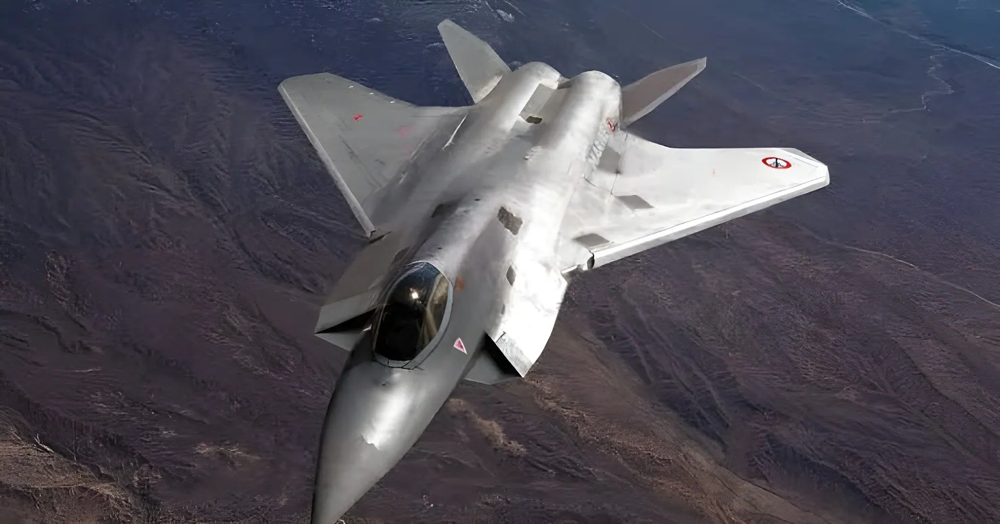

Lancé en grande pompe en 2017 par Emmanuel Macron et Angela Merkel, le Système de combat aérien du futur devait incarner la souveraineté militaire européenne. Le 8 juin 2026, Paris et Berlin ont acté son abandon, faute d'accord entre Dassault Aviation et Airbus sur le leadership industriel. Récit d'un naufrage qui interroge la capacité de l'Europe à mener des programmes d'armement communs.
Le Système de combat aérien du futur (SCAF, ou FCAS en anglais) est lancé en juillet 2017 par le président français Emmanuel Macron et la chancelière allemande Angela Merkel, à l'occasion d'un sommet bilatéral. L'Espagne rejoint le programme deux ans plus tard, en 2019. L'ambition est considérable : concevoir un « système de systèmes » articulé autour d'un avion de chasse de nouvelle génération (le NGF, New Generation Fighter), accompagné de drones connectés et d'un « cloud de combat » reliant en temps réel appareils, capteurs et centres de décision.
L'objectif affiché était de remplacer, à l'horizon 2040, le Rafale français et l'Eurofighter utilisé par l'Allemagne et l'Espagne, tout en réduisant la dépendance européenne envers les équipements américains. Le programme devait rester en service plusieurs décennies, probablement jusque dans les années 2080, et représentait l'un des plus grands projets industriels de défense jamais portés par l'Europe.
Au cœur de l'échec : un conflit de gouvernance entre les deux maîtres d'œuvre industriels. Dassault Aviation, seul avionneur européen avec les Britanniques à maîtriser la conception complète d'un avion de combat (via le Rafale), revendiquait le leadership technique sur le NGF. Airbus Defence and Space, qui représentait les intérêts allemands et espagnols, refusait ce rôle subalterne et réclamait, via ses filiales, un partage du contrôle. Dassault dénonçait une architecture de gouvernance qui le mettait systématiquement en minorité face au vote conjoint des filiales allemande et espagnole d'Airbus.
Cette bataille industrielle a été amplifiée par la pression syndicale : en mars 2026, le syndicat allemand IG Metall a obtenu 85,8 % des voix aux élections professionnelles chez Airbus, renforçant sa capacité à peser sur la direction du groupe pour exiger l'abandon du partenariat avec Dassault si ses conditions n'étaient pas satisfaites.
Emmanuel Macron et Angela Merkel lancent le programme SCAF lors d'un sommet franco-allemand.
L'Espagne rejoint officiellement le programme, aux côtés de la France et de l'Allemagne.
La signature des contrats de la phase 2 du programme, déjà repoussée, est de nouveau ajournée sans nouvelle date.
Le chancelier Friedrich Merz exprime publiquement ses doutes sur l'avenir du programme. Une mission de médiation franco-allemande est lancée.
Macron et Merz actent en sommet la création d'une mission de médiation d'urgence. Airbus fixe un ultimatum à la mi-avril pour trancher la gouvernance du projet.
La médiation gouvernementale échoue selon la presse allemande. Le blocage industriel persiste malgré les tentatives politiques de déblocage.
Le gouvernement allemand annonce que Macron et Merz ont acté l'abandon du volet aéronautique du SCAF, faute d'accord entre Dassault et Airbus.
Friedrich Merz se rend à l'ILA, le salon aéronautique de Berlin, où la fin du programme franco-allemand est officiellement confirmée.
L'abandon du chasseur habité ne signifie pas la fin de toute coopération : Paris et Berlin ont indiqué vouloir préserver le volet numérique du programme, à savoir le cloud de combat et certaines briques technologiques liées aux drones, qui pourraient se poursuivre sous une forme allégée. Un Conseil des ministres franco-allemand est prévu en juillet 2026 pour établir un plan de travail industriel actualisé, recentré sur un nombre plus restreint de projets jugés réalistes.
Pour l'Allemagne, plusieurs portes de sortie sont évoquées : rejoindre le GCAP (Global Combat Air Programme), le projet concurrent porté par le Royaume-Uni, l'Italie et le Japon, qui vise une entrée en service dès 2035 avec un vol de démonstrateur ciblé pour 2027 ; commander davantage de chasseurs américains F-35 ; ou encore explorer une voie nationale aux côtés du suédois Saab. Côté français, la ministre des Armées Catherine Vautrin a affirmé que la France disposait des compétences nécessaires, via Dassault, Safran et Thales, pour poursuivre seule le développement d'un avion de chasse à l'horizon 2040.
| Indicateur | Donnée vérifiée |
|---|---|
| Lancement du programme | 2017 (France, Allemagne, puis Espagne en 2019) |
| Budget global initialement envisagé | Entre 80 et 100 milliards d'euros |
| Investissement franco-allemand 2021-2025 | Environ 4 milliards d'euros |
| Accord-cadre initial | 150 millions d'euros |
| Mise en service initialement visée | 2035 – 2040 |
| Annonce officielle de l'abandon | 8 juin 2026 |
En France, le Sud-Ouest, où Dassault Aviation est historiquement implanté autour de Bordeaux, pourrait voir des centaines d'emplois et des investissements planifiés depuis 2018 remis en question. Les tensions entre les deux groupes ne se limitent d'ailleurs pas au SCAF : dès le 12 juin 2026, Dassault a réclamé une compensation financière à Airbus concernant le programme Eurodrone, après la réduction de sa charge de travail consécutive à la suspension des achats français de ce drone européen — signe que la rupture de confiance dépasse le seul avion de combat.
Au-delà des chiffres, c'est un symbole qui s'effondre : celui du moteur franco-allemand comme socle de toute avancée européenne en matière de défense. L'échec interroge la capacité de l'Union européenne à mener des programmes d'armement communs sans un mécanisme de gouvernance capable de trancher entre intérêts industriels nationaux divergents.
« Le président français et le chancelier allemand sont arrivés au constat partagé que les entreprises ne parvenaient pas à s'entendre sur la construction d'un avion de combat commun. »
— Communiqué du gouvernement allemand, 8 juin 2026Le naufrage du SCAF dépasse largement le cas d'un programme d'armement annulé. Il illustre une difficulté structurelle de l'Union européenne : financer des ambitions communes ne suffit pas si aucun mécanisme politique n'est capable d'imposer une chaîne de commandement industrielle unique en cas de désaccord. La France défendait une logique de souveraineté technologique portée par un seul maître d'œuvre ; l'Allemagne raisonnait davantage en termes de retombées industrielles partagées pour ses propres champions. Ces deux logiques, chacune rationnelle à l'échelle nationale, se sont révélées incompatibles à l'échelle du couple franco-allemand. Reste à savoir si Paris et Berlin sauront tirer les leçons de cet échec pour les prochains grands projets de défense européens, à l'heure où le contexte géopolitique rend plus urgente que jamais une autonomie stratégique du continent.
2017 von Emmanuel Macron und Angela Merkel mit großem Pomp gestartet, sollte das Future Combat Air System die militärische Souveränität Europas verkörpern. Am 8. Juni 2026 besiegelten Paris und Berlin sein Aus — aus Mangel an Einigung zwischen Dassault Aviation und Airbus über die industrielle Führung. Die Geschichte eines Scheiterns, das Europas Fähigkeit zu gemeinsamen Rüstungsprogrammen infrage stellt.
Das Future Combat Air System (FCAS, französisch SCAF) wurde im Juli 2017 vom französischen Präsidenten Emmanuel Macron und der deutschen Bundeskanzlerin Angela Merkel auf einem bilateralen Gipfel ins Leben gerufen. Spanien trat dem Programm zwei Jahre später, 2019, bei. Der Anspruch war gewaltig: ein „System der Systeme" rund um einen Kampfjet der neuen Generation (NGF, New Generation Fighter), begleitet von vernetzten Drohnen und einer „Combat Cloud", die Flugzeuge, Sensoren und Entscheidungszentren in Echtzeit verbindet.
Ziel war es, bis 2040 den französischen Rafale sowie den von Deutschland und Spanien genutzten Eurofighter zu ersetzen und gleichzeitig die europäische Abhängigkeit von US-Ausrüstung zu verringern. Das Programm sollte über mehrere Jahrzehnte im Dienst bleiben, vermutlich bis in die 2080er-Jahre, und zählte zu den größten Rüstungsindustrieprojekten, die Europa je auf den Weg gebracht hat.
Im Zentrum des Scheiterns steht ein Governance-Konflikt zwischen den beiden industriellen Hauptauftragnehmern. Dassault Aviation, neben den Briten der einzige europäische Flugzeugbauer mit vollständiger Kompetenz im Bau eines Kampfflugzeugs (über den Rafale), beanspruchte die technische Führung beim NGF. Airbus Defence and Space, das die deutschen und spanischen Interessen vertrat, lehnte diese untergeordnete Rolle ab und forderte über seine Tochtergesellschaften eine geteilte Kontrolle. Dassault prangerte eine Governance-Struktur an, die das Unternehmen durch das gemeinsame Stimmverhalten der deutschen und spanischen Airbus-Töchter systematisch in die Minderheit versetzte.
Dieser industrielle Konflikt wurde durch gewerkschaftlichen Druck verstärkt: Im März 2026 erhielt die deutsche Gewerkschaft IG Metall bei den Betriebsratswahlen bei Airbus 85,8 % der Stimmen, was ihren Einfluss auf die Konzernführung erhöhte, um notfalls die Aufkündigung der Partnerschaft mit Dassault zu fordern.
Emmanuel Macron und Angela Merkel starten das FCAS-Programm auf einem deutsch-französischen Gipfel.
Spanien tritt offiziell dem Programm bei, neben Frankreich und Deutschland.
Die Vertragsunterzeichnung für Phase 2 des Programms, bereits verschoben, wird erneut ohne neuen Termin vertagt.
Bundeskanzler Friedrich Merz äußert öffentlich Zweifel an der Zukunft des Programms. Eine deutsch-französische Vermittlungsmission wird eingeleitet.
Macron und Merz beschließen auf einem Gipfel eine dringliche Vermittlungsmission. Airbus stellt ein Ultimatum bis Mitte April, um die Governance-Frage zu klären.
Die Regierungsvermittlung scheitert laut deutscher Presse. Die industrielle Blockade hält trotz politischer Entschärfungsversuche an.
Die deutsche Regierung gibt bekannt, dass Macron und Merz das Aus für den Flugzeugteil des FCAS beschlossen haben — mangels Einigung zwischen Dassault und Airbus.
Friedrich Merz besucht die ILA, die Berliner Luftfahrtmesse, wo das Ende des deutsch-französischen Programms offiziell bestätigt wird.
Das Aus für den bemannten Kampfjet bedeutet nicht das Ende jeder Zusammenarbeit: Paris und Berlin erklärten, den digitalen Teil des Programms erhalten zu wollen — die Combat Cloud sowie einige technologische Bausteine im Zusammenhang mit Drohnen, die in abgespeckter Form fortgeführt werden könnten. Für Juli 2026 ist ein deutsch-französischer Ministerrat geplant, um einen aktualisierten Arbeitsplan zu erstellen, der sich auf eine geringere Zahl realistischer Projekte konzentriert.
Für Deutschland werden mehrere Ausstiegsoptionen genannt: ein Beitritt zum GCAP (Global Combat Air Programme), dem Konkurrenzprojekt von Großbritannien, Italien und Japan, das eine Indienststellung ab 2035 anstrebt, mit einem für 2027 angepeilten Demonstratorflug; eine größere Bestellung des amerikanischen F-35-Kampfjets; oder ein nationaler Weg gemeinsam mit dem schwedischen Hersteller Saab. Auf französischer Seite erklärte Verteidigungsministerin Catherine Vautrin, Frankreich verfüge über Dassault, Safran und Thales über die nötigen Kompetenzen, um bis 2040 allein ein Kampfflugzeug zu entwickeln.
| Kennzahl | Verifizierter Wert |
|---|---|
| Start des Programms | 2017 (Frankreich, Deutschland, dann 2019 Spanien) |
| Ursprünglich geplantes Gesamtbudget | Zwischen 80 und 100 Milliarden Euro |
| Deutsch-französische Investition 2021–2025 | Rund 4 Milliarden Euro |
| Ursprünglicher Rahmenvertrag | 150 Millionen Euro |
| Ursprünglich geplante Indienststellung | 2035 – 2040 |
| Offizielle Bekanntgabe des Aus | 8. Juni 2026 |
In Frankreich könnte der Südwesten, wo Dassault Aviation traditionell rund um Bordeaux ansässig ist, Hunderte Arbeitsplätze und seit 2018 geplante Investitionen infrage gestellt sehen. Die Spannungen zwischen den beiden Konzernen beschränken sich zudem nicht auf das FCAS: Bereits am 12. Juni 2026 forderte Dassault eine finanzielle Entschädigung von Airbus im Zusammenhang mit dem Eurodrone-Programm, nachdem sich die Arbeitslast infolge der Aussetzung französischer Käufe dieser europäischen Drohne verringert hatte — ein Zeichen dafür, dass der Vertrauensbruch über den Kampfjet hinausgeht.
Über die Zahlen hinaus bricht ein Symbol zusammen: das des deutsch-französischen Motors als Fundament jedes gemeinsamen europäischen Verteidigungsfortschritts. Das Scheitern stellt die Fähigkeit der Europäischen Union infrage, gemeinsame Rüstungsprogramme ohne einen Governance-Mechanismus durchzuführen, der bei divergierenden nationalen Industrieinteressen eine Entscheidung erzwingen kann.
„Der französische Präsident und der deutsche Bundeskanzler sind gemeinsam zu der Feststellung gelangt, dass sich die Unternehmen nicht auf den Bau eines gemeinsamen Kampfflugzeugs einigen konnten."
— Mitteilung der deutschen Bundesregierung, 8. Juni 2026Der Untergang des FCAS geht weit über den Fall eines annullierten Rüstungsprogramms hinaus. Er zeigt eine strukturelle Schwierigkeit der Europäischen Union: Gemeinsame Ambitionen zu finanzieren genügt nicht, wenn kein politischer Mechanismus in der Lage ist, im Streitfall eine einheitliche industrielle Befehlskette durchzusetzen. Frankreich vertrat eine Logik technologischer Souveränität unter einem einzigen Hauptauftragnehmer; Deutschland dachte stärker in geteilten industriellen Vorteilen für die eigenen Champions. Diese beiden, jeweils auf nationaler Ebene rationalen Logiken erwiesen sich auf der Ebene des deutsch-französischen Tandems als unvereinbar. Es bleibt abzuwarten, ob Paris und Berlin aus diesem Scheitern Lehren für die nächsten großen europäischen Verteidigungsprojekte ziehen — in einem geopolitischen Kontext, der eine strategische Autonomie des Kontinents dringlicher denn je macht.